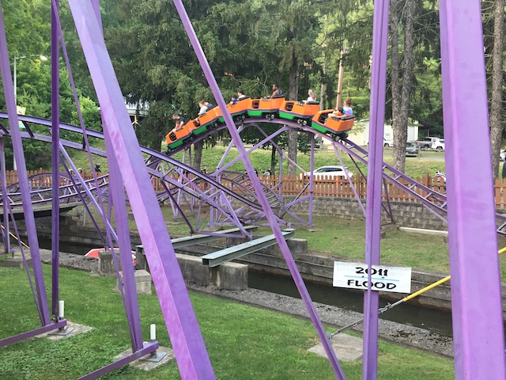
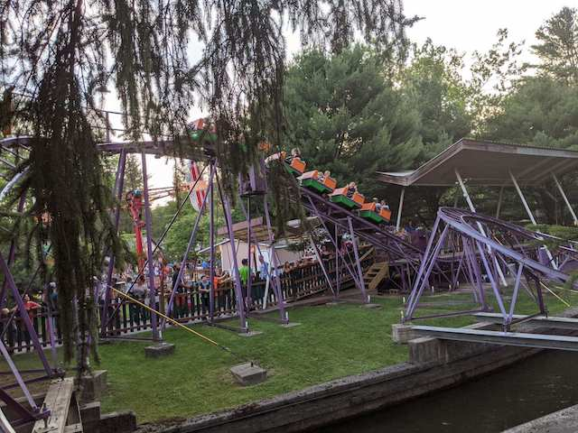
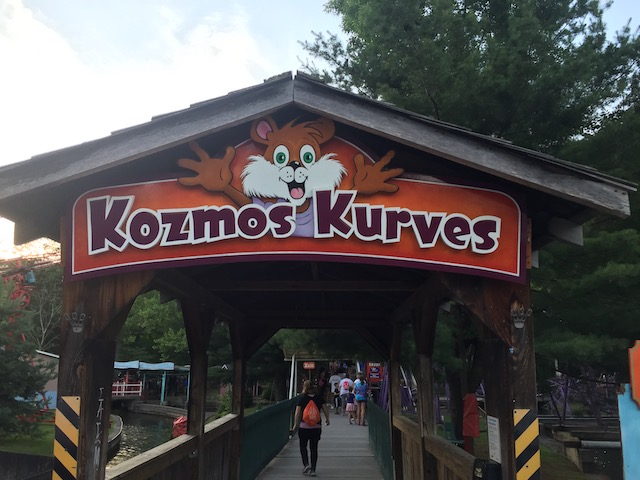

| |
Kozmo's Kurves Review

We're here at Knoebels. For credit whoring, there's Kozmo's Kurves. And honestly, compared to most other kiddy coasters, this is actually a fun ride. After you barley squeeze in the cars, you climb up the lift hill. Then you head down the curving first drop. It's a really nice first drop (For a kiddy coaster). Then you go over the first hill. Then you go into a kiddy turnaround. That actually has a couple of lateral Gs and then comes the best part of the ride. The BUNNY HOPS!!! These are actual bunny hops that give you ACTUAL AIRTIME AND ACTUAL LATERAL Gs!!! I'm being serious!!! If you're a credit whore, I'd totally ride this!!! They don't have a kid requirement, so you're safe here!! =)
4/10
Location: Knoebels
Opened: 2009
Built by: Miler Coasters
Last Ridden: June 26, 2021
Kozmo's Kurves Photos



Home
|